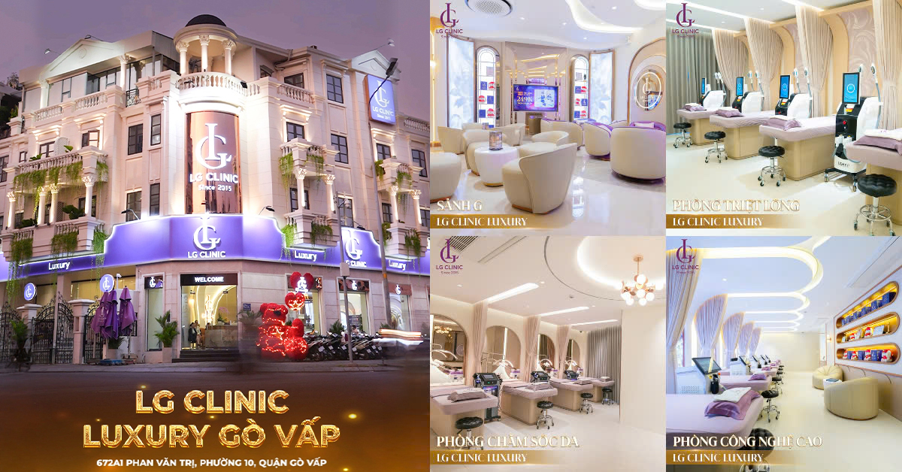

Hướng dẫn triệt lông chân hiệu quả và an toàn nhất
Triệt lông chân đã trở thành xu hướng chăm sóc sắc đẹp không thể bỏ qua trong cuộc sống hiện đại. Không chỉ đơn thuần là vấn đề thẩm mỹ, việc loại bỏ lông chân còn mang lại cảm giác tự tin, thoải mái và nhiều lợi ích thiết thực cho sức khỏe. Hãy cùng khám phá những phương pháp hiệu quả nhất để sở hữu đôi chân mịn màng như ý muốn.
Tổng quan về triệt lông chân trong thời đại hiện đại
Trong thế giới hiện đại, triệt lông chân không còn là điều xa lạ mà đã trở thành nhu cầu thiết yếu của hàng triệu người trên toàn cầu. Theo các nghiên cứu gần đây, khoảng chừng 90% phụ nữ và 35% nam giới quan tâm đến việc loại bỏ lông chân để có được vẻ ngoài hoàn hảo và tự tin hơn trong mọi hoàn cảnh.
Hiện tượng lông chân phát triển mạnh mẽ chủ yếu do sự tác động của hormone testosterone, tạo ra những cảm giác khó chịu khi mặc các trang phục ngắn, đặc biệt là trong những dịp quan trọng hoặc mùa hè oi bức. Điều này không chỉ ảnh hưởng đến vẻ ngoài mà còn tác động tích cực đến tâm lý và sự tự tin của mỗi người.
Thị trường hiện nay cung cấp vô số phương pháp triệt lông chân đa dạng, từ những cách thức truyền thống đã được kiểm chứng qua thời gian như cạo lông, nhổ lông, đến những công nghệ tiên tiến nhất như laser IPL, công nghệ ánh sáng xung. Mỗi phương pháp đều sở hữu những ưu điểm vượt trội và hạn chế riêng biệt, phù hợp với từng loại da, ngân sách và mục tiêu cụ thể của người sử dụng.
Lý do nên lựa chọn triệt lông chân
Tại sao hàng triệu người lại lựa chọn triệt lông chân như một phần thiết yếu trong cuộc sống? Câu trả lời nằm ở những lợi ích vượt trội mà phương pháp này mang lại. Đầu tiên và quan trọng nhất chính là yếu tố thẩm mỹ - đôi chân không có lông tạo nên vẻ đẹp mịn màng, quyến rũ và đầy tự tin khi diện những trang phục yêu thích.
Sức mạnh của vẻ đẹp và tâm lý tích cực
Việc sở hữu đôi chân mịn màng không chỉ nâng cao vẻ ngoài mà còn tạo ra những thay đổi tích cực về mặt tâm lý. Các nghiên cứu cho thấy khoảng chừng 85% phụ nữ cảm thấy tự tin hơn đáng kể khi mặc váy ngắn, quần short sau khi đã thực hiện triệt lông chân thành công.
Sự tự tin này không chỉ thể hiện trong việc lựa chọn trang phục mà còn ảnh hưởng tích cực đến các hoạt động xã hội, thể thao, du lịch biển và những khoảnh khắc quan trọng trong cuộc sống. Đôi chân không có lông giúp trang phục ôm sát hoàn hảo, tạo đường nét thuần khiết và quyến rũ, đặc biệt quan trọng với những ai yêu thích phong cách thời trang hiện đại.
Lợi ích vượt trội về vệ sinh và sức khỏe
Bên cạnh giá trị thẩm mỹ, triệt lông chân còn mang lại những lợi ích không thể phủ nhận về mặt vệ sinh. Lông chân có xu hướng tích tụ bụi bẩn, mồ hôi, vi khuẩn và các tạp chất từ môi trường, tạo điều kiện thuận lợi cho sự phát triển của các vấn đề da liễu không mong muốn.
- Loại bỏ hoàn toàn tình trạng tích tụ mồ hôi và mùi hôi khó chịu
- Tăng cường khả năng vệ sinh và làm sạch da một cách triệt để
- Giảm thiểu đáng kể nguy cơ nhiễm trùng da và viêm nang lông
- Tối ưu hóa hiệu quả của các sản phẩm chăm sóc da chuyên dụng
- Cải thiện lưu thông máu và quá trình trao đổi chất ở vùng da
Triệt lông chân bằng công nghệ laser
Công nghệ laser hiện đại đã cách mạng hóa việc triệt lông chân, mang lại hiệu quả lâu dài và an toàn cao. Laser hoạt động bằng cách phát ra ánh sáng có bước sóng đặc biệt, tác động trực tiếp vào melanin trong nang lông, phá hủy khả năng tái tạo của lông.
Các loại laser phổ biến
Có nhiều loại laser khác nhau được sử dụng trong triệt lông chân, mỗi loại có đặc điểm riêng phù hợp với từng loại da và màu lông. Laser Diode 808nm là loại được ưa chuộng nhất do hiệu quả cao và ít tác dụng phụ.
Laser Alexandrite 755nm phù hợp với da sáng và lông đen, trong khi laser Nd:YAG 1064nm an toàn cho da tối màu. Công nghệ IPL (Intense Pulsed Light) cũng được sử dụng rộng rãi, mặc dù không phải là laser thực sự nhưng có cơ chế hoạt động tương tự.
Quy trình triệt lông laser
Quy trình triệt lông chân bằng laser thường bao gồm các bước sau: tư vấn và đánh giá da, cạo lông trước điều trị, thực hiện chiếu laser, và chăm sóc sau điều trị. Mỗi buổi điều trị kéo dài khoảng chừng 30-90 phút tùy thuộc vào diện tích cần điều trị.
Để đạt hiệu quả tối ưu, cần thực hiện khoảng chừng 6-8 buổi, cách nhau 4-6 tuần. Điều này do lông có nhiều chu kỳ phát triển khác nhau, và laser chỉ có hiệu quả với lông đang trong giai đoạn anagen (giai đoạn tăng trưởng).
- Buổi 1-2: Giảm khoảng chừng 20-30% lông
- Buổi 3-4: Giảm khoảng chừng 50-60% lông
- Buổi 5-6: Giảm khoảng chừng 70-80% lông
- Buổi 7-8: Đạt hiệu quả tối ưu 85-95%

Triệt lông chân bằng phương pháp wax
Wax là một trong những phương pháp triệt lông chân phổ biến nhất, được ưa chuộng bởi hiệu quả cao và chi phí hợp lý. Phương pháp này sử dụng sáp nóng hoặc lạnh để bám dính vào lông, sau đó nhanh chóng kéo ra để loại bỏ lông từ gốc.
Các loại wax và đặc điểm
Wax nóng (hard wax) được làm nóng đến nhiệt độ khoảng chừng 45-50°C, có khả năng bám dính tốt với lông dày và cứng. Loại này ít gây đau hơn vì không dính vào da mà chỉ bám vào lông.
Wax lạnh (soft wax) được sử dụng với giấy wax, phù hợp với lông mảnh và vùng da lớn. Mặc dù có thể gây đau hơn một chút, nhưng wax lạnh có thể loại bỏ được cả những sợi lông rất ngắn.
Kỹ thuật thực hiện wax chân
Để triệt lông chân bằng wax hiệu quả, cần chuẩn bị da sạch sẽ và lông có độ dài khoảng chừng 0.5-1cm. Thoa wax theo hướng mọc lông, sau đó nhanh chóng kéo ngược lại một cách quyết đoán.
Kỹ thuật đúng sẽ giúp giảm thiểu đau đớn và tăng hiệu quả. Sau khi wax, nên sử dụng dầu dưỡng hoặc gel làm dịu để giảm kích ứng và viêm đỏ.
- Chuẩn bị da: Làm sạch và khô ráo
- Kiểm tra nhiệt độ wax: Không quá nóng
- Thoa wax: Theo hướng mọc lông
- Kéo nhanh: Ngược hướng mọc lông
- Chăm sóc sau: Dưỡng ẩm và làm dịu

Phương pháp triệt lông chân tự nhiên
Đối với những ai ưa thích các phương pháp tự nhiên, có nhiều cách triệt lông chân sử dụng nguyên liệu thiên nhiên. Mặc dù hiệu quả có thể không nhanh chóng như các phương pháp hiện đại, nhưng chúng an toàn và ít gây kích ứng da.
Đường và chanh
Hỗn hợp đường và chanh tạo thành một loại wax tự nhiên có thể sử dụng để loại bỏ lông chân. Phương pháp này không chỉ loại bỏ lông mà còn tẩy tế bào chết, giúp da mịn màng hơn.
Để chuẩn bị, nấu 2 chén đường với 1/4 chén nước chanh và 1/4 chén nước cho đến khi hỗn hợp chuyển màu vàng nâu. Để nguội đến nhiệt độ vừa phải rồi sử dụng như wax thông thường.
Nghệ và sữa
Nghệ có tính chất làm chậm quá trình mọc lông khi sử dụng thường xuyên. Trộn bột nghệ với sữa tươi tạo thành hỗn hợp đặc, thoa lên vùng da có lông và massage nhẹ nhàng trong 10-15 phút.
Phương pháp này cần kiên trì thực hiện khoảng chừng 2-3 lần mỗi tuần trong vài tháng mới thấy hiệu quả rõ rệt. Tuy nhiên, nghệ có thể làm da chuyển màu vàng tạm thời.
Dầu kiến và các loại dầu tự nhiên
Dầu kiến được nhiều người tin rằng có khả năng làm chậm quá trình mọc lông. Massage dầu kiến lên vùng da đã được làm sạch, để qua đêm và rửa sạch vào sáng hôm sau.
- Dầu kiến: Massage 2-3 lần mỗi tuần
- Dầu bạc hà: Có tính chất làm mát và kháng khuẩn
- Dầu trà xanh: Giúp làm chậm quá trình mọc lông
- Dầu lavender: Có tác dụng làm dịu và thư giãn
Cách lựa chọn phương pháp triệt lông chân phù hợp
Việc lựa chọn phương pháp triệt lông chân phù hợp phụ thuộc vào nhiều yếu tố cá nhân. Cần xem xét kỹ lưỡng về loại da, màu lông, ngân sách, thời gian và mục tiêu mong muốn để đưa ra quyết định tốt nhất.
Đánh giá loại da và màu lông
Da nhạy cảm nên tránh các phương pháp có thể gây kích ứng mạnh như wax hoặc epilator. Thay vào đó, có thể lựa chọn laser hoặc các phương pháp tự nhiên nhẹ nhàng hơn.
Màu lông cũng là yếu tố quan trọng khi lựa chọn phương pháp. Lông đen, dày phù hợp với laser, trong khi lông vàng, xám có thể khó điều trị bằng laser và cần các phương pháp khác.
Cân nhắc về thời gian và chi phí
Nếu muốn hiệu quả lâu dài và sẵn sàng đầu tư, laser là lựa chọn tốt nhất. Chi phí ban đầu cao nhưng về lâu dài sẽ tiết kiệm hơn so với việc wax định kỳ.
Đối với những người có ngân sách hạn chế, wax tại nhà hoặc các phương pháp tự nhiên là lựa chọn hợp lý. Tuy nhiên, cần tính toán thời gian và công sức bỏ ra.
- Chi phí thấp: Cạo lông, kem tẩy lông
- Chi phí trung bình: Wax, epilator
- Chi phí cao: Laser, IPL
- Muốn hiệu quả nhanh: Wax
- Muốn hiệu quả lâu dài: Laser, IPL
Những lưu ý quan trọng khi triệt lông chân
Khi thực hiện triệt lông chân bằng bất kỳ phương pháp nào, cần tuân thủ những nguyên tắc an toàn cơ bản để tránh các biến chứng không mong muốn. Việc chuẩn bị kỹ lưỡng và chăm sóc đúng cách sau điều trị là yếu tố quyết định thành công.
Chuẩn bị trước khi triệt lông
Trước khi tiến hành triệt lông chân, cần làm sạch da bằng xà phòng kháng khuẩn và để khô hoàn toàn. Tránh sử dụng các sản phẩm có chứa alcohol hoặc các chất kích thích trong 24 giờ trước khi điều trị.
Nếu sử dụng phương pháp laser, cần cạo lông trước khoảng chừng 1-2 ngày để lông có độ dài phù hợp. Đối với wax, lông cần có độ dài khoảng chừng 0.5-1cm để wax bám dính tốt.
Các trường hợp cần tránh
Không nên triệt lông chân khi da đang bị tổn thương, có vết cắt, hoặc đang trong tình trạng viêm nhiễm. Phụ nữ có thai nên tham khảo ý kiến bác sĩ trước khi thực hiện, đặc biệt là với các phương pháp sử dụng laser.
Người đang sử dụng thuốc làm tăng độ nhạy cảm ánh sáng hoặc có tiền sử keloid cũng cần cẩn trọng khi lựa chọn phương pháp điều trị.
- Tránh tiếp xúc với ánh nắng mặt trời trực tiếp
- Không sử dụng khi da bị tổn thương
- Tránh trong kỳ kinh nguyệt (da nhạy cảm hơn)
- Không kết hợp với các phương pháp khác cùng lúc
Trải nghiệm triệt lông chân an toàn – hiệu quả cùng LG Clinic
Với hơn 8 chi nhánh trên toàn TP.HCM và Bình Dương, LG Clinic tự hào là địa chỉ làm đẹp được hàng ngàn khách hàng tin tưởng lựa chọn. Sở hữu hệ thống công nghệ hiện đại, đội ngũ kỹ thuật viên được đào tạo bài bản cùng không gian chuẩn spa 5 sao, LG Clinic cam kết mang đến dịch vụ triệt lông chân hiệu quả vượt trội – không đau rát, không tổn thương da và phù hợp với nhiều loại da khác nhau.
Tại LG Clinic, bạn không chỉ được tư vấn chi tiết về quy trình triệt lông phù hợp mà còn được chăm sóc da chuyên sâu sau liệu trình, giúp làn da luôn mềm mại, sáng khỏe.
👉 Tham khảo thêm về dịch vụ
triệt lông chân,
triệt lông chân,
giá triệt lông chân,
triệt lông chân,
triệt lông chân,
triệt lông chân,
triệt lông chân,
triệt lông chân,
triệt lông chân,
triệt lông chân,
triệt lông chân,
triệt lông chân,
triệt lông chân,
triệt lông chân,
triệt lông chân.
📞 Liên hệ ngay hotline 1900 888 833 hoặc đến chi nhánh gần bạn nhất để được tư vấn miễn phí!

Kết luận về triệt lông chân hiệu quả
Việc triệt lông chân đã trở thành một phần quan trọng trong chăm sóc cá nhân hiện đại. Với sự đa dạng của các phương pháp từ truyền thống đến hiện đại, mỗi người có thể tìm được giải pháp phù hợp với nhu cầu và ngân sách của mình.
Công nghệ laser và các phương pháp hiện đại mang lại hiệu quả vượt trội, giúp bạn có được làn da mịn màng trong thời gian dài. Tuy nhiên, việc lựa chọn địa chỉ uy tín và tuân thủ quy trình chăm sóc sau triệt lông là yếu tố quyết định thành công.
Nhìn chung, đầu tư vào triệt lông chân chuyên nghiệp sẽ mang lại lợi ích lâu dài không chỉ về mặt thẩm mỹ mà còn về sự tự tin và chất lượng cuộc sống. Hãy cân nhắc kỹ lưỡng và lựa chọn phương pháp phù hợp nhất cho bản thân.